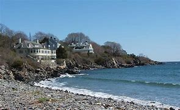

Atlantic Trails Resort
The Accommodations at Atlantic Trails

- What is a bungalow?
- Our luxury bungalows are permanent structures four feet off the ground. Each bungalow has canvas walls, a wooden floor, and a roof dome that can be opened.
- How are the bungalows furnished?
- Each bungalow is furnished with a queen-size bed with down quilt and gas-fired stove. The luxury camping experience also includes electricity and a sink with hot and cold running water. Shower and restroom facilities are located in the lodge.
- What should I bring?
- Bring a sense of adventure and some time to relax! Most guests also pack comfortable walking shoes and plan to dress for changing weather with layers of clothing.
Copyright © 2018 Atlantic Trails Resort
sherzah@tahir.com
sherzah@tahir.com